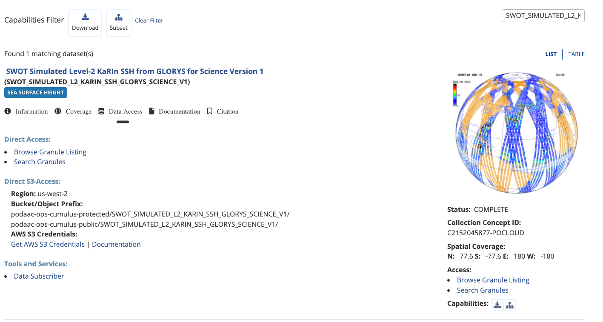
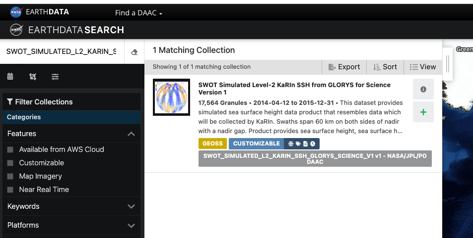

Location of data in the PO.DAAC S3 Archive
We need to determine the path for our products of interest. We can do this through several mechanisms.
Finding S3 Location information from the PO.DAAC Portal
The easiest of which is through the PO.DAAC Cloud Dataset Listing page: https://podaac.jpl.nasa.gov/cloud-datasets

For each dataset, the ‘Data Access’ tab will have various information, but will always contain the S3 paths listed specifically. Data files will always be found under the ‘protected’ bucket.
Finding S3 Location from Earthdata Search
From the Earthdata Search Client (search.earthdata.nasa.gov), collection level information can be found by clicking the ‘i’ on a collection search result. An example of this is seen below:

Once on the collection inforamtion screen, the S3 bucket locations can be found by scrolling to the bottom of the information panel. The SWOT_SIMULATED_L2_KARIN_SSH_GLORYS_SCIENCE_V1 example is shown below.

Finding S3 Location from CMR
One can query the collection identifier to get information from CMR:
https://cmr.earthdata.nasa.gov/search/concepts/C2152045877-POCLOUD.umm_jsonThe identifier is found on the PO.DAAC Cloud Data Set Listing page entries, called ‘Collection Concept ID’
Results returned will look like the following:
{
...
"DirectDistributionInformation": {
"Region": "us-west-2",
"S3BucketAndObjectPrefixNames": [
"podaac-ops-cumulus-protected/SWOT_SIMULATED_L2_KARIN_SSH_GLORYS_SCIENCE_V1/",
"podaac-ops-cumulus-public/SWOT_SIMULATED_L2_KARIN_SSH_GLORYS_SCIENCE_V1/"
],
"S3CredentialsAPIEndpoint": "https://archive.podaac.earthdata.nasa.gov/s3credentials",
"S3CredentialsAPIDocumentationURL": "https://archive.podaac.earthdata.nasa.gov/s3credentialsREADME"
},
...
}